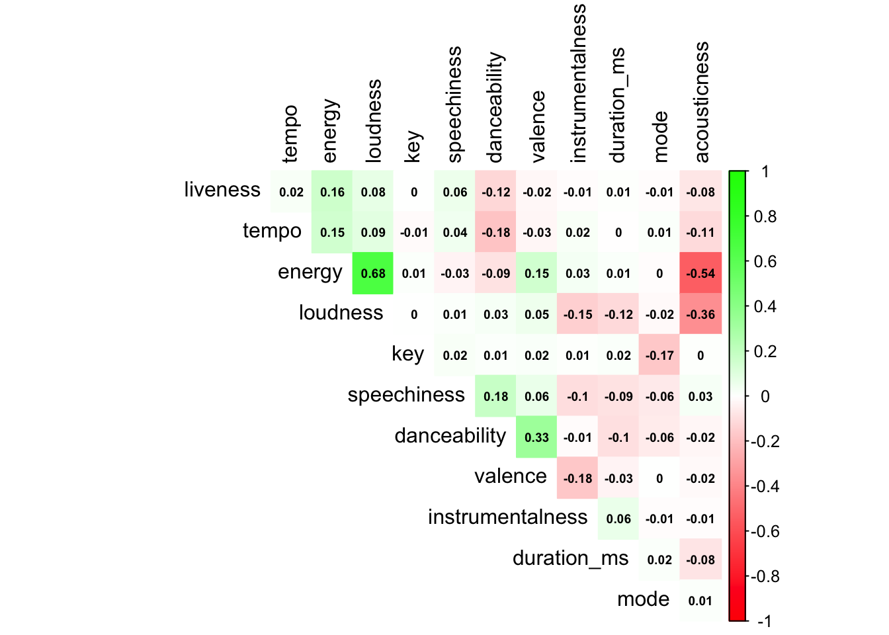
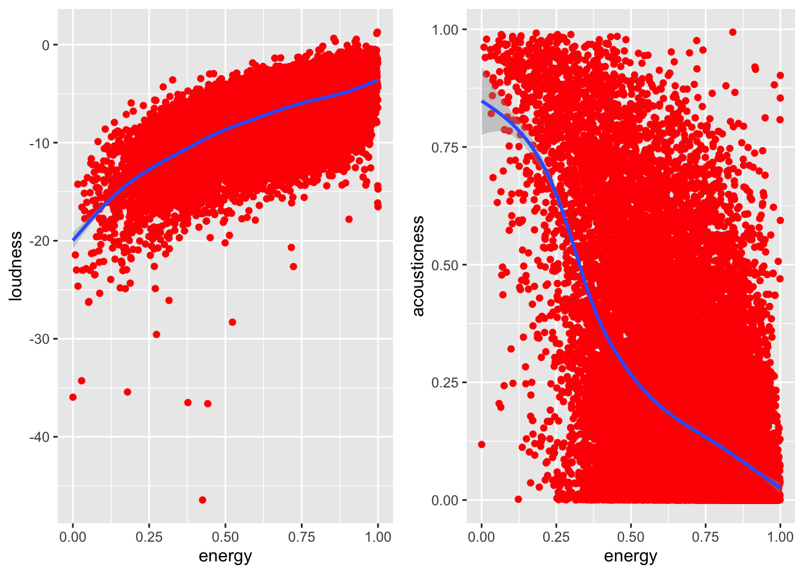
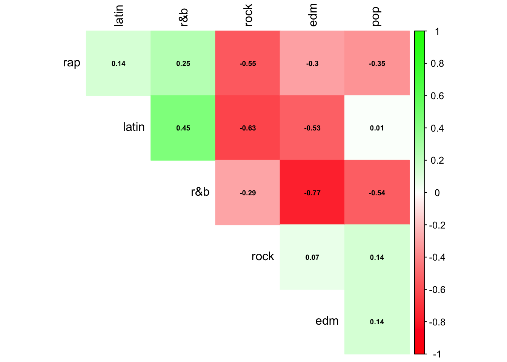

Chapter 5 Results
In this section, we are going to focus on the relationship among genre vs music features vs popularity. More specifically, we will be exploring how music genres differ in characteristics, discovering what music features (individual or combined) will positively or negatively affect the popularity and figuring out if there exists any correlation between features and figure out if the relationship between features and popularity satisfy certain patterns or distributions.
5.1 Statistics of Genres
5.1.1 General Overview of Genres
First, we can get some statistics of each genre of songs:
| playlist_genre | genre_total | average_popularity |
|---|---|---|
| edm | 6043 | 34.83353 |
| rap | 5746 | 43.21545 |
| pop | 5507 | 47.74487 |
| r&b | 5431 | 41.22353 |
| latin | 5155 | 47.02658 |
| rock | 4951 | 41.72834 |
From the above bar chart and pie chart, we can conclude that every genre has relatively same size of data and no genre is biased meaning that no big differences in the size among six genres, which is great for our later analysis on genre characteristics. From the above Cleveland dot plot of number of genres, we can see that genre edm is has the most data and thus is the most popular genre and the rap and pop genres are the second and the third popular ones. Then we assumed that genre emd will have the highest average popularity (calculated by the sum of popularity of each song divided by the total number of songs in the genre) because it’s the most popular genre. However, we checked the plot of average popularity of each genre, a conflict appears and we noticed that the most popular genre edm has the lowest average popularity among other genres. And other genres have the same situation. i.e. The third popular genre pop has the highest average popularity. Those conflicts imply that number of songs in the genre,which is supposed to represent the popularity of genre, is not equivalent to the popularity of the genre. Even though it gives us some useful information about how popular this genre is, we can’t simply use it to describe the overall popularity of the genre. To understand what really separate songs into different genres and how music features affect genres, we need to more detailed statistics of genres.
5.1.2 Density curve of each genre

The above density plot of music features of each genre tells us how each music feature is related to each genre and how relevant that particular feature defines the genre. From the plot, we can see that edm genre is less likely to be acoustic and more likely to have high energy with low valence(negativeness e.g. sad, depressed, angry) and edm have the highest number of songs having medium level tempo(spped or pace of a song). For latin genre, we can see that it’s likely to have high dancebility and high valence(positiveness). For pop genre, we can see that it’s less likely to have songs with longer durations and most of songs in the pop have medium length duration. For r&b genre, it scores low on liveness and has medium level valence and high durantion of songs. rap genre scores high on dancebility, duration and speechiness which is obvious and it matches our understanding toward rap songs because rap songs tend to have more spoken words than others. And for rock genre, we can see that it has high value on liveness which means that it’s more likely to be recorded and low on dancebility which also matches our general understanding toward rock songs because most them are less likely to be danceable. For features like duration_ms, key, mode and tempo are not providing good insight of separating the genres, so we will focus on the rest eight features and explore them in more depth.
5.1.3 History and Boxplot For Genres

From the histogram, we can tell that features are different in genres, but the differneces among features in each genre are not big enough for us to come up with an conclusion, so we need to create other plots to help up analyze those eight features and we chose to plot a box-whisker plot for the rest eight features against each genre:
 Combined the density plot, histogram and the boxplot, we can conclude the following for the eight features:
Combined the density plot, histogram and the boxplot, we can conclude the following for the eight features:
Valence:
It can provide us a good separation between edm and other genres because there is considerable differences between the median values and ranges, while other genres have similar valence and latin has the highest valence than others.
Energy:
It has similar median value and range for genre latin and pop which means it’s not a really good separation for these two genres while the remaning four have large differences on energy.
Dancibility:
It can provide a good separation between rock and other genres because rock has the lowest median and range value on dancibility, while other genres have similar median and range values and rap has the highest score on dancibility.
Instrumentalness:
It provides a clear separation between edm and other genres because it’s the only genre with range and it has the highes score on it.
Loudness:
All genres have similar values in loudness which means that loudness is common in all six genres and thus loudness is not considered as a good separation.
Speechiness:
It can provide a good sepration between rap and other genres since there is considerable differneces between the median and range values. If we only consider the range in boxplot, since the there is also big differences in range, it can also be a good separation.
Liveness:
The median value of each genre are almost the same and the differneces among the ranges are not large enough to be a good separation.
Acousticness:
It can provide a good separation for all six genres because the there are considerable differnces between median values and the range. R&b genre has the highest value on acousticness.
5.2 Correlation
Now, we want to explore how these features correlate with one another and if there is any redundancy in correlation between those features.

1. From the above graph, we can see that energy and loudness are fairly highly correlated (0.68) and energy and acousticness are negatively correlated(-0.54), which makes sense because the more energy the music has, the less acousticness the music will need.
2. There is also a negative relationship(-0.36) between loudness and acousticness and this also makes sense because the louder the music is, the less acoustic the music will be.
3. Also, there is a positive correlation between danceability and valence since happier songs lead to more dancing.
4. Liveness, tempo, and energy are clustered together, as are speechiness and danceability.
5. Another tnteresting discovery is that the danceability is negatively correlated with tempo and energy because in reality, people are more likely to dance if the energy is high or if the temp is fast.
Now, we want to further explore the positive correlation between energy and loundness and the negative relationship between engery and acousticness from the previous findings.
As we can see from the two graphs, there is a strong positive correlation between energy and loudness and blue fitting line is linear. As energy increases, the loudness also increases. For the relationship between energy and acousticness, even though the blue fitting line is not very linear, we can still observe a negative correlation that as energy increases, the acousticness decreases.

The correlation graph points out a negative relationship (-0.36) and from the above graph, we can see a clear negative correlation between loudness and acousticness because the blue fitting line is linear and it fits the points. This correlation makes sense because in reality, if the acousticeness gets louder, it wll be harder to hear the songs and the loudness will decrease.

From the above graph, we can see a clear positve correlation between danceability and valence because the blue fitting lines is linear and it fits almost all points. As danceability increases, the valence increases. This makes sense because the more happier the song is, the more dancing there will be.
In th previous step, we explored the correlation among different features and now we want to explore correlation among genres and we will be using the median feature value for each genre.

From the graph, we can see that rap have positive relationship with latin and r&b and have negative correlation with the rest genres.latin has positve relationship with r&b and negative correlation with the rest genres. r%b has negative correlation with rock, edm and pop. rock has positive relationship with edm and pop and edm has postive correlation with pop
5.3 Distribution of Genre
5.3.1 Overall Distribution of Features

From the histograms, we can observe the following:
1. Songs with duration of 2.5 to 4 minutes have majority listeners.
2. More than 80% of data have a value no larger than 0.1 in instrumentalness
3. Energy and Danceability are approximately normally distribuited and Valence is normally distributed
4. Most of the songs have a loudness level between -5dB and -10db
5. Majority songs have speechiness less than 0.25 indicating that more speechy songs aren’t favoured.
6. Most songs have liveness less than 0.25 which means that those songs are not recoreded.
7. The mode looks like a bimodal distribution and there are only value 0 and value 1.
8. The key feature are separated approximately evenly amount all songs.
5.3.2 QQ plot


From QQ plot, we can tell that danceability and tempo follows normal distribution, while others deviate from normal distribution.
Valence: It is the only feature without many outliers. Latin’s mean and percentiles are higher than all other genre. Edm’s mean and percentiles is lowest, while all others remain similar to each other.
Energy: edm has the highest energy and rock might have the highest variance probably. r&b has the lowest energy, which is expected.
Danceability: rock has the lowest mean danceability, while other genre are on the same level. There are a lot of low outliers for all genre.
loudness: as the loudness for nearly all the genre are looking similar, and variance of the loudness seems low, and there are lots of low outliers for each genre.
speechiness: among all the genre, rap’s speechiness is the highest. and speechiness for r&b and latin are similar, while all others remains every low speechiness.
Accoustcness: since it can provide a good separation for all six genres because the there are considerable differnces between median values and the range. R&b genre has the highest value on acousticness from the previous box
Instrumentalness: It’s not normally distributed because it provides a clear separation between edm and other genres because it’s the only genre with range and it has the highes score on it from the boxplot.
Liveness: The median value of each genre are almost the same and the differneces among the ranges are not large enough to be a good separation.